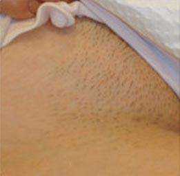
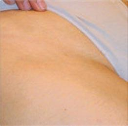

Pain-free · hair-free
Laserska epilacija
Trajno zmanjšanje neželene poraščenosti s SHR IN-Motion tehnologijo hitro, udobno in primerno za različne tipe kože.
Quantum Health
Nič več britja, voskanja in vraščenih dlak.
Laserska epilacija je zasnovana za postopno zmanjšanje neželene poraščenosti na obrazu in telesu. Tretmaji se lahko izvajajo skozi vse leto, tudi v poletnih mesecih in na porjaveli koži.
01
SHR IN-Motion
Nenehno gibanje laserskega modula omogoča enakomerno obravnavo predela.
02
6–15 obiskov
Za trajnejše rezultate je potrebnih več tretmajev, odvisno od področja, tipa kože in dlačic.
03
Brez okrevanja
Po tretmaju se lahko praviloma vrnete k vsakodnevnim aktivnostim.
Tehnologija
Postopno segrevanje dlačnih mešičkov z močnim hlajenjem kože.
Pain-Free, Hair-Free postopek z lasersko SHR tehnologijo postopoma segreva dlačne mešičke. Kontaktno hlajenje laserskega modula pomaga ohranjati udobje in varnost tretmaja.
obraz
noge
roke
pazduhe
bikini
hrbet
prsa
Primerno za
Ženske in moške, različne tipe kože ter večino predelov telesa.
Tretma se individualno prilagodi tipu kože, barvi in strukturi dlačic ter področju obravnave.
Primer
Prej in potem
Sliki sta prikazani ločeno in pregledno, da ne izgledata stisnjeno ali slabo odrezano.

Potem
Prednosti
Hitro, udobno in prilagojeno posamezniku.
Prednosti laserske epilacije so najbolj opazne pri vsakdanji negi kože in zmanjšanju ponavljajočega britja.
Praktično neboleče
Kontaktno hlajenje in IN-Motion tehnika pomagata zmanjšati neprijeten občutek med tretmajem.
Za vse leto
Tretmaji se opravljajo skozi vse leto, tudi v poletnih mesecih in na porjaveli koži.
Manj vraščenih dlak
Laserska epilacija lahko pomaga zmanjšati težave z vraščenimi dlakami, draženjem in pogostim britjem.
Hitri tretmaji
Tretmaji so običajno krajši od 60 minut, odvisno od števila in velikosti predelov.
Več predelov
Ob enem obisku se lahko obravnava več predelov telesa, kadar je to smiselno.
Osebna nastavitev
Parametri se prilagodijo tipu kože, barvi dlačic, strukturi dlačic in področju posega.
SHR IN-Motion
Zakaj je ta tehnologija drugačna?
SHR IN-Motion tehnologija ne deluje z enim samim prehodom, ampak z več prehodi po manjšem območju. Koža se postopoma segreva, energija se razporeja bolj enakomerno, hlajenje pa pomaga pri udobju tretmaja.
- več prehodov čez obravnavano področje
- postopno segrevanje dlačnega mešička
- kontaktno hlajenje kože
- individualna nastavitev programa
Potek
Kako poteka laserska epilacija
Stran je narejena bolj pregledno, da obiskovalec takoj razume korake.
Brezplačen posvet
Pregleda se področje, tip kože, struktura dlačic, pričakovanja in primeren ritem tretmajev.
Priprava kože
Pred tretmajem se razloži, kako pripraviti kožo in česa se je dobro izogibati pred obiskom.
Tretma
Laser se premika po izbranem področju, kontaktno hlajenje pa skrbi za udobnejši občutek.
Nadaljevanje
Ker dlake rastejo v ciklih, se tretmaji ponavljajo v dogovorjenih presledkih.
Pogosta vprašanja
Najpogostejše dileme
Kratki odgovori, da stran ni prenatrpana z dolgim tekstom.
Koliko tretmajev je potrebnih?
Za telo je običajno potrebnih približno 8–15 tretmajev, za obraz pa je pogosto potrebnih več obiskov. Točno število je odvisno od področja, tipa kože, strukture dlačic in hormonskih dejavnikov.
Ali se lahko tretma izvaja poleti?
Da, na strani je posebej navedeno, da se tretmaji izvajajo skozi vse leto, tudi v poletnih mesecih in na porjaveli koži.
Ali je laserska epilacija boleča?
Postopek je zasnovan kot Pain-Free, Hair-Free tretma. SHR IN-Motion tehnologija in kontaktno hlajenje zmanjšata neprijeten občutek.
Ali laser deluje na vse dlačice?
Najhitrejši rezultat je običajno pri temnejših dlačicah. Bele dlačice in zelo svetel puh ne absorbirajo laserske svetlobe dovolj dobro.
Kaj je razlika med laserjem in IPL?
Laser uporablja usmerjen svetlobni snop določene valovne dolžine, zato prodira globlje in deluje bolj ciljano. IPL je bolj razpršena svetloba in ima običajno manjšo moč delovanja.
Kakšen je presledek med tretmaji?
Prvi tretmaji se običajno izvajajo približno mesečno, nato se presledki lahko podaljšujejo na 2–3 mesece. Načrt se prilagodi posamezniku.
Prijava
Rezervacija za lasersko epilacijo
Pošljite osnovne podatke in kratek opis predela, ki vas zanima.